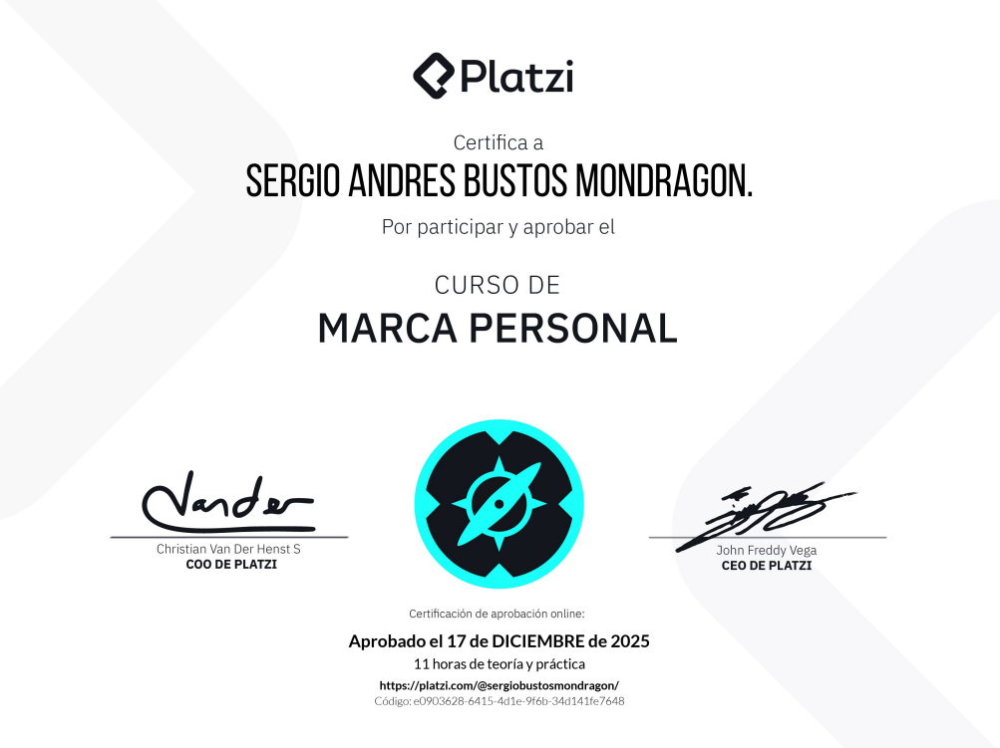

Este certificado acredita que completé el curso Marca Personal en Platzi, donde desarrollé mi imagen como programador, aprendí psicología laboral, cómo expresarme en el entorno profesional y cómo relacionarme de forma coordinada y respetuosa.
Este curso fortaleció mi disciplina y mentalidad para crecer como persona en el mundo profesional de la manera más respetuosa y auténtica posible.